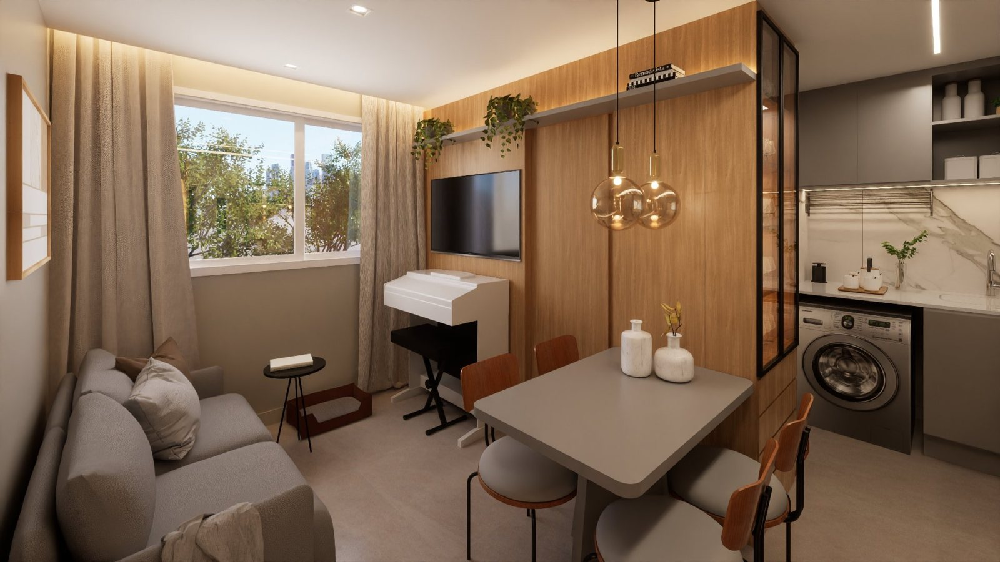
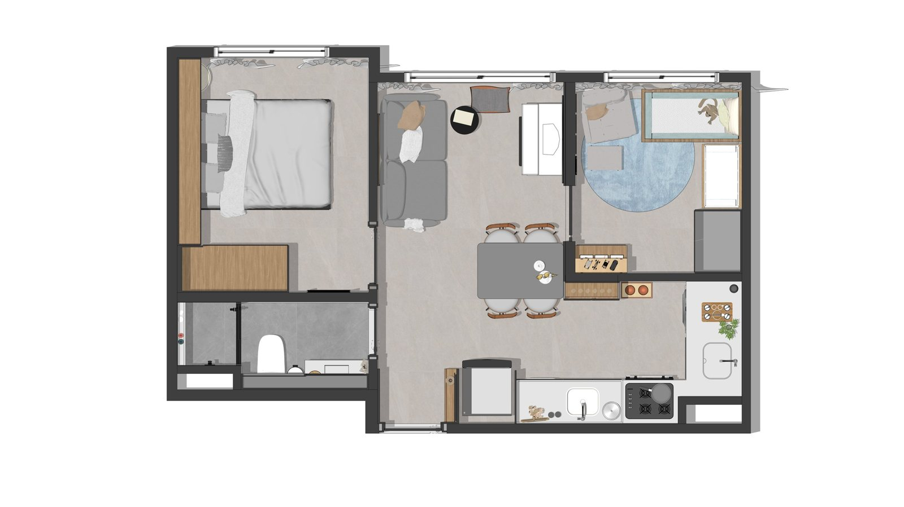
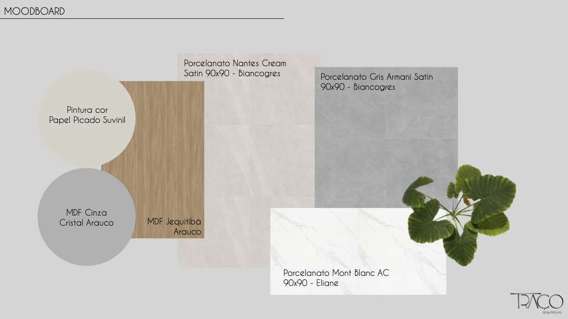

Trinta e cinco metros quadrados não pedem menos vida: pedem mais intenção. Neste apartamento, cada centímetro foi pensado para que morar caiba inteiro, do café da manhã à rotina do casal e à chegada de uma criança.

A paleta nasce de poucos gestos: a madeira clara de jequitibá, o cinza cristal, porcelanatos em tons de areia e pedra, o branco do mármore e o verde de uma folha. Matéria honesta e cor calma, para acalmar o olhar e deixar a casa respirar.

Projetar um espaço pequeno é um exercício de escolha: ficar com o essencial e deixar que ele seja belo.